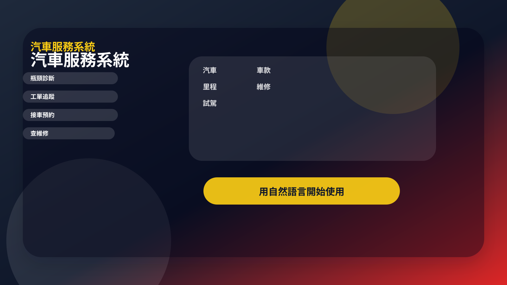

產業元件
條件搜尋
依產業欄位篩選資料
汽車服務系統
用自然語言開始，直接說出想做的內容、尺寸、素材與輸出格式，系統會回到這個產業需要的工具與流程。
汽車買賣、維修廠、租車、試駕與車主服務平台。

產業網站內容
每個不同產業的網站，都會自動帶出服務對象、主要情境、可完成的動作、重要提醒與開始方式，讓訪客不用理解技術細節也能判斷這個服務是否適合自己。
產業使用情境
依需求選出的頁面元件
產業元件
依產業欄位篩選資料
產業元件
整理重點、狀態與下一步
產業元件
顯示資料來源與更新時間
產業元件
提供管理者查詢與維護紀錄
搜尋車款
依照汽車服務系統的實際資料與規則顯示結果，重要操作會先讓使用者確認。
比較價格
依照汽車服務系統的實際資料與規則顯示結果，重要操作會先讓使用者確認。
預約試駕
依照汽車服務系統的實際資料與規則顯示結果，重要操作會先讓使用者確認。
網站閱讀與操作體驗
網站會依服務內容安排首頁、方案、說明與素材頁，並檢查品牌、文字、按鈕和手機版是否容易使用。
首頁主視覺要有層次，不只是單色區塊。
把服務、情境、流程與交付重點拆成可掃讀的卡片。
讓使用者一眼看到下一步與完成狀態。
用細緻動效承接科技感，但不喧賓奪主。
滑過卡片能看出可點、可比較、可追蹤。
把資料來源、完成狀態、限制與下一步確認分層講清楚。
介面再分析強化層
產生網站後，系統會再檢查每個頁面的目的、使用者下一步、文字對比、動畫舒適度與素材來源，讓介面元件被放在合適的位置；容易造成不舒服的旋轉背景不會預設啟用。
首頁
首頁負責讓訪客快速理解整個專案，不只講單一功能；適合重點標記、卡片總覽、立體卡片、打字效果與文字切換。
方案
方案頁要把價格、階段、權益與使用限制放在同一張可比較的內容裡。
文件
測試頁要讓使用者看得懂資料來源、完成狀態、限制與可以怎麼測。
後台
後台要讓管理者快速看到服務狀態、使用紀錄、資料清單與待處理事項。
素材
素材頁負責品牌圖、主視覺、素材包、替換槽與公開網址狀態，不再只有文字說明。
產業化頁面模組
資料查詢、預約、電商、點餐、AI 生成、房地產、旅遊與企業系統，都會產生對應卡片、測試問句、素材規格與使用說明，讓網站看起來像該產業自己的服務。
使用汽車服務系統，幫我搜尋車款，並依汽車整理結果。使用汽車服務系統，幫我比較價格，如果資料不足請告訴我缺什麼。使用汽車服務系統，幫我預約試駕，並列出下一步可以怎麼做。這是產業網站預覽內容。正式公開網址與圖片公開連結會在部署或儲存服務授權後另外產生。
網站會自動適應手機：文字大小會隨畫面調整，導覽可以水平滑動，卡片在手機改為單欄，並避免文字超出畫面。